ORGE - Omega Race Gray Encoder
Stock Status: SOLD OUT
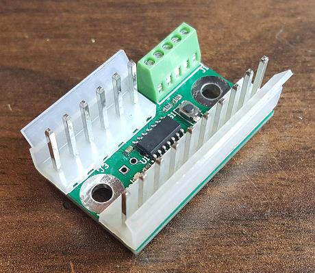
I'm selling the Omega Race Gray Encoder (ORGE) A/G Converter replacement board. This interfaces a standard quadrature rotary encoder to an Omega Race PCB.
Note that this is only the interface board and doesn't include the rotary encoder (recommended encoders are noted below).
Features:
Plug-in replacement of A/G Converter
Supports variety of quadrature rotary encoders
Adjustable sensitivity
Low cost
Easy installation
Ordering info
ORGE boards are $30 each.
Plastic bracket/screw set is an additional $2 each (needed for the larger Chinese encoders, not the Bourns encoder).
Shipping is a flat $5 to the US for as many boards/brackets as you order... actual shipping cost to the rest of the world.
Email me if you have any questions or if you'd like to order.
Encoder options
You must supply your own rotary encoder. I highly recommend an optical encoder, which will have a smooth feel and long operating life, instead of the really cheap mechanical encoder (which will quickly wear out, and many of them have a detent which won't feel like the original spinner).
My preferred encoder is the Bourns ENS1J-B28-R00128, which is currently available (as of August 2018) on ebay for under $20 with shipping. This will attach directly to the original Omega Race spinner and bracket.
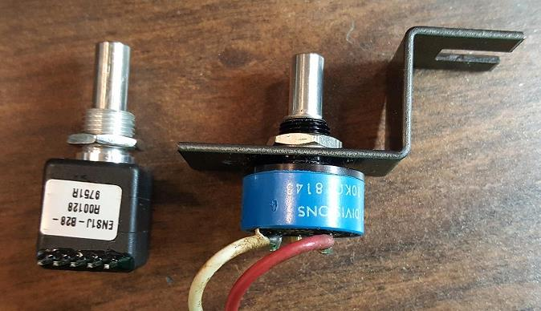
I have also tested two Chinese optical encoders, which are commonly available on ebay, aliexpress, etc. One was a 400 pulse/rotation, and the other was a 1024 pulse/rotation. Both of these work fine as well, but require a different bracket for attaching to the control panel.
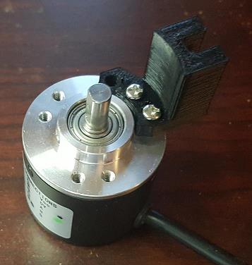 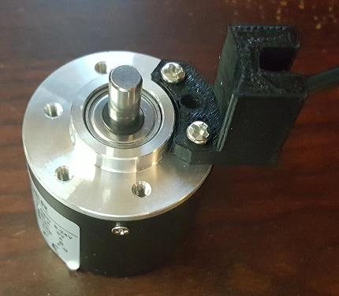
Installation/Configuration
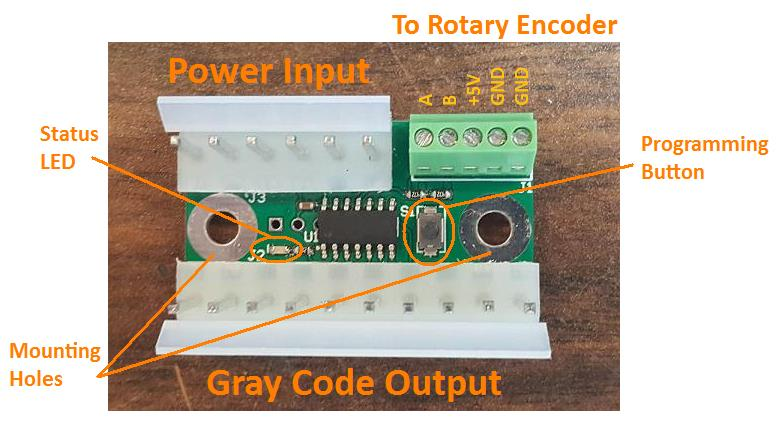
(Bottom of board shows connection pinout as well)
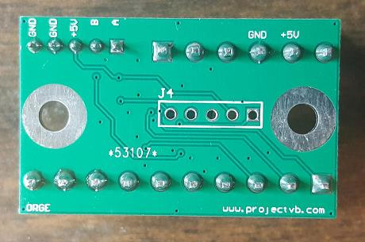
Installation involves removing the original potentiometer and bracket from the spinner, attaching the rotary encoder to the bracket, and attaching the encoder to the spinner.
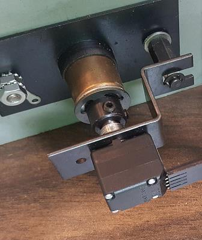 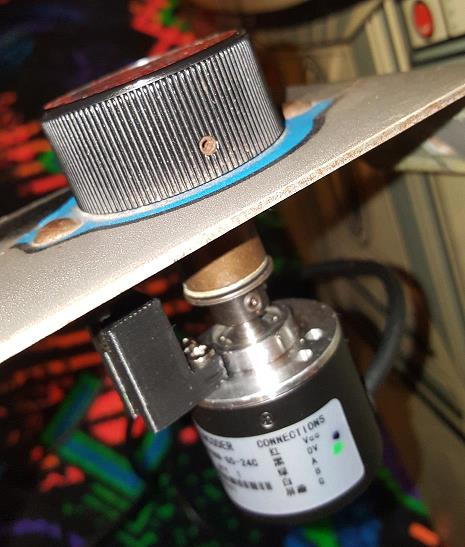
Then you need to hook the rotary encoder wires up to the ORGE board, and move the connectors from the A/G Converter board to the ORGE board.
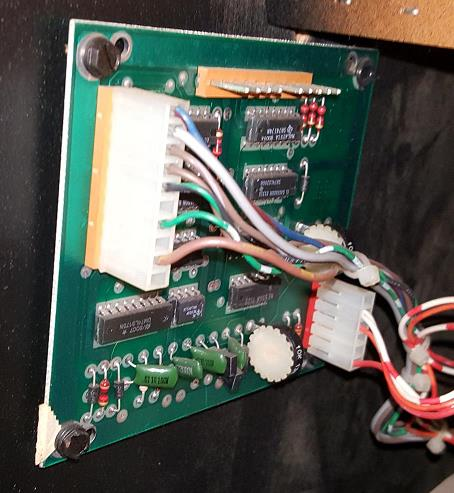
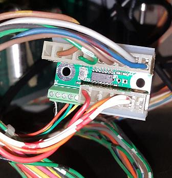
Be sure to hook the correct wires to the correct screw terminal, and make sure the wires are fully inserted into the screw terminal, and don't have any wire strands hanging out where they could short to an adjacent pin. The Chinese encoders have wires already attached, though the colors may vary from the picture shown below, so confirm with the documentation. The Bourns encoder doesn't include wires, so you'll need to provide your own wires. The pinout of the Bourns encoder is molded into the plastic case.
Also note that there are two GND connections on the board... these are provided for convenience with the Chinese encoders, which have a signal GND and a shield wire. The Bourns encoder can use either GND terminal, and the other can be left unused.
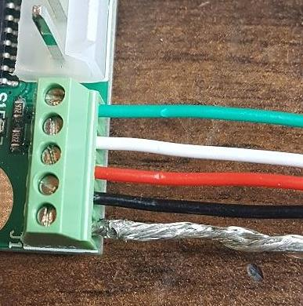 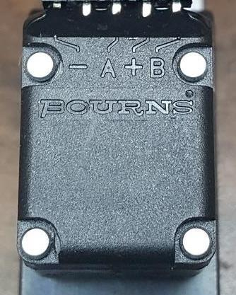
The ORGE should work with any Omega Race cabinet, though I only have an upright and cockpit to test. The cocktail would require two ORGEs, and you'd likely need to run +5V to one of the sides (the original A/G converter supported two spinners).
Besides just being a good spinner replacement, the one unique feature is the adjustable sensitivity. I personally use the Bourns 128 pulse per rotation encoder, and have the sensitivity adjusted so full ship rotation is 1/2 turn. This gives me quicker control of the ship... though you can program it for your desired sensitivity.
To configure the sensitivity, simply press the program button on the ORGE board (status LED will turn on), rotate the spinner as much as you'd like for a full ship rotation, then press the program button again to save (status LED will turn off).
During normal use, the status LED will toggle for each change in output.
Because of the programmability, the exact number of pulses per rotation of the chosen encoder isn't critical. If you want EXACT 1:1 rotation like an original spinner, you'll need an encoder with a multiple of 64 pulses per rotation (since Omega Race has 64 possible ship rotation positions). The most common cheap Chinese ones are 360, 400, and 600 though, which can be configured to within several percent of 1:1, or to the desired custom sensitivity.
NOTES:
-The Bourns encoder doesn't include wires, so you'll need 4 wires to connect between the ORGE and encoder (the Chinese encoders come with wires already attached).
-You'll need a small flathead jeweler's screwdriver for the screw terminals. They are small, and slightly fragile, so be gentle.
-The program button is small... again, be gentle. Click the button with your fingernail, rather than squeezing the whole button with your finger (which can crush the switch if you squeeze too hard).